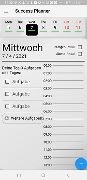
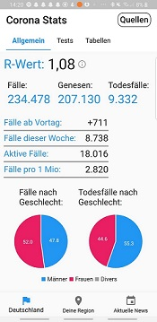

Faber est suae quisque fortunae ~ A.C. Caecus
Kurz vor beginn der Coronapandemie machte mich ein YouTube-Video auf das Framework Flutter aufmerksam und inspirierte mich dazu ebenfalls eine eigene App zu entwickeln. Nachdem ich mir dann innerhalb von 2 Wochen die Basics angeeignet habe, begann ich mit einer einfachen To-Do-List-App. Nach der Fertigstellung dieser entschloss ich mich einige Tage zu Brainstormen und eigene Ideen zu entwickeln. Mit dem Wissen, dass selbstorganisation nicht jedem leicht fällt, begann ich mit der Konzeption eines Planers.
Diese Task-Planner-App musste anders sein, als die abertausenden anderen auf dem Markt. So inspirierte mich Micheal Hyatt's Full Focus Planner,
ein physischer erfolgreicher Planer speziell für Selbstständige, einen Planer zu entwickeln, welcher dieselbe Funktion im digitalen Bereich abdeckt
und erweitert. Mit diesem Wissen entwickelte ich einen funktionierenden Prototyp, welcher jedoch noch nicht alle Features bereitstellte, welche ich
für einen Launch vorraussetzte.
Als nun die Pandemie ein riesiges Thema war, stellte ich die Task-Planner-App erstmal auf Eis und versuchte ein Coronabezogenes Problem zu lösen. Im Alltag erkannte ich nun eine nervige Angewohnheit an mir selbst. Ich guckte fast täglich auf die aktuellen Zahlen und Nachrichten. Diese Umständlichkeit zu vereinfachen war nun meine zweite große App-Idee. Meine App sollte die aktuellen Coronazahlen aus sicherer Quelle beziehen, die Daten verarbeiten und übersichtlich in Diagrammen und Graphen darstellen. Die Besonderheit war hier, dass die App erkennen sollte in welchem Bundesland und in welchem Kreis sich der Nutzer befindet und so die für den Nutzer relevanten Daten anzeigen. Dazu sollte die App den Benutzer über wichtige Nachrichten auf Bundes-, Land- und Kreisebene informieren und auf Artikel aus seriösen Quellen verweisen. Diese Konzeption setzte ich fast vollständig in einen Prototyp um. Da ich aber erst zu dem Zeitpunkt erkannte, dass man für App-Launches im Play- und Appstore die Volljährigkeit erreicht haben muss, beschloss ich die Verfollständigung dieses Projekts ebenfalls zu verlegen. Diese Entscheidung, bewahrte mich dabei vor unnötiger Arbeit, da ein Monat später eine App auf dem Markt kam, welche meine Idee umsetzte, jedoch noch mehr Features biet und damit ziemlich erfolgreich war.
|
|